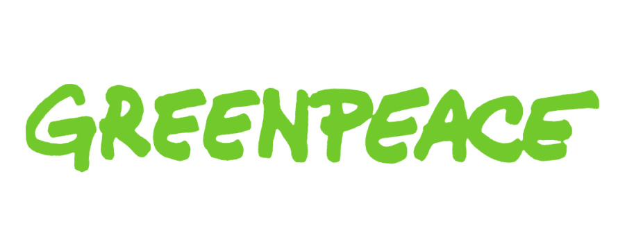

Abbreviations and acronyms
Avoid using abbreviations and acronyms whenever possible. If you really need to use an abbreviation or an acronym, spell it out the first time you…
Read more
This is a guide to help us write clear and consistent content. Please use it as a reference when you’re writing or editing content for the Greenpeace UK website.
Our style guide goes beyond grammar and punctuation, also explaining how we express ourselves as an organisation.
The focus is a practical one, building on the strategic bedrock of the communications and engagement strategy.
Where something isn’t specified here, please follow the Guardian style guide. Where something isn’t explicitly covered in the Guardian style guide, follow Guardian usage.
This is a live style guide and we are constantly adding to it and revising current sections. If you have suggestions for things to include, please get in touch with the content editorial team.
Avoid using abbreviations and acronyms whenever possible. If you really need to use an abbreviation or an acronym, spell it out the first time you…
Read moreUse the active voice. Avoid the passive voice. In the active voice, the subject of the sentence does the action. In the passive voice, the…
Read moreWe don’t use bold in normal text on the website. Where they improve clarity and help to make the point, we use italics to emphasise…
Read moreBullet points are great for emphasising important information. Use them when the items in your list are in no particular order. And do so sparingly:…
Read moreButtons should always contain actions. The language should be clear and concise. Capitalise only the first word. Standard buttons on our site include: Sign the…
Read moreWe follow Guardian style for capitalisation. Where something isn’t explicitly covered in the Guardian style guide, follow Guardian usage. Mostly that means minimising the use…
Read moreThese principles underpin all our content and the way that we work to produce content. We keep them in mind when planning, creating, delivering and…
Read moreThese are some examples of how we describe ourselves and our work: For a green and peaceful world. Standing together for a green and peaceful…
Read moreWrite for all readers. Some people will read every word you write. Others will just skim. Help everyone read more easily by grouping related ideas…
Read moreTypography and hierarchy is important. It’s a vital element of our design. H1 and h2 tags are used by search engines to understand the structure…
Read moreWe want to ensure that our content is accessible and welcoming to everyone who uses it. Inclusive language helps us to be more accurate and…
Read moreA list of words or phrases and how to use them. Words to avoid. Guidance on usage, capitalisation, spelling etc. Where something isn’t specified here,…
Read moreProvide a link whenever you’re referring to something on an external website. Use links to point users to relevant content elsewhere on the website and…
Read moreUse words from one to nine and then numerals from 10 upwards. Always use words at the start of a sentence. Where using a numeral adds…
Read morePunctuation helps readers understand our content, clarifying, signposting and generally making life smoother for everyone. To make sure that all the dots, lines and squiggles…
Read morePull quotePull quotes can be used to highlight a short passage from the text and to visually break up the flow of text. Pull quotes…
Read moreWe follow Guardian style on spelling, using British English, so, for example, we use -ise rather than -ize.
Read moreWhenever we create content, we consider the context and what our audience might find relevant and motivating. We don’t change who we are, but we…
Read moreOur voice is the Greenpeace personality, as expressed through content: on our website, on social media, in emails. It’s distinctive, flexible and identifiable; it’s the personification…
Read moreAccessibility is important for everyone, not just people with disabilities. Trying to read a non-responsive website on a phone with a terrible data signal shows…
Read moreThis section is still being worked on. We'll upload a more comprehensive list of words soon. To describe ships: it She or any other female…
Read more